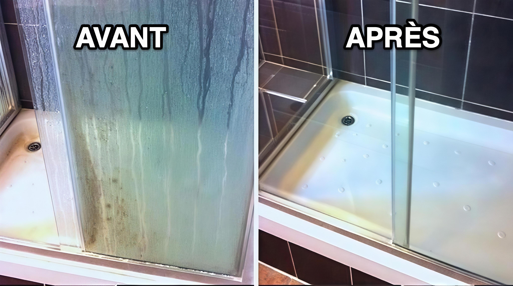

Votre expert en ménage et nettoyage à Lyon, Arles, Marseille, Saintes-Maries-de-la-Mer, Saint-Rémy-de-Provence, Nîmes
Basée à Lyon, MME Propre est votre entreprise de nettoyage de confiance pour particuliers et professionnels à Lyon, Arles, Marseille, Saintes-Maries-de-la-Mer, Saint-Rémy-de-Provence, Nîmes, et leurs alentours, incluant Villeurbanne, Saint-Priest, Vénissieux, Aix-en-Provence, Martigues, Istres, et Salon-de-Provence. Nous sommes spécialisés dans le ménage à domicile, le nettoyage de bureaux, d’appartements, de maisons, de campings, et de locaux professionnels dans les régions Auvergne-Rhône-Alpes, Provence-Alpes-Côte d'Azur, et Occitanie. Avec des années d’expérience, notre équipe garantit un service de qualité avec des produits écologiques et des équipements professionnels.
Notre mission est de rendre vos espaces propres, sains, et accueillants, que ce soit pour un ménage régulier à Lyon, un nettoyage de bureaux à Marseille, ou un entretien de campings à Saintes-Maries-de-la-Mer. Nous offrons des devis gratuits et des interventions rapides à Lyon, Arles, Marseille, Saint-Rémy-de-Provence, Nîmes, Villeurbanne, Saint-Priest, Vénissieux, Aix-en-Provence, Martigues, Istres, et Salon-de-Provence. Contactez-nous pour découvrir nos solutions de nettoyage adaptées à vos besoins !
 Demander un devis gratuitHoraires :
7 jours sur 7 : 8h00 – 20h00
Pour tous vos besoins en ménage et nettoyage à Lyon, Arles, Marseille, Saintes-Maries-de-la-Mer, Saint-Rémy-de-Provence, Nîmes, Villeurbanne, Saint-Priest, Vénissieux, Aix-en-Provence, Martigues, Istres, Salon-de-Provence, ou dans les régions Auvergne-Rhône-Alpes, Provence-Alpes-Côte d'Azur, et Occitanie, contactez MME Propre dès aujourd’hui. Découvrez des conseils pour un nettoyage écologique avec l’Agence de la transition écologique (ADEME).